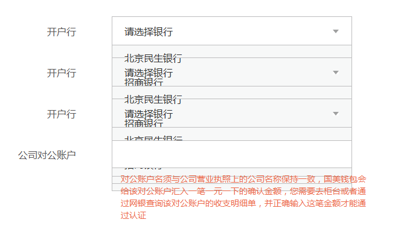
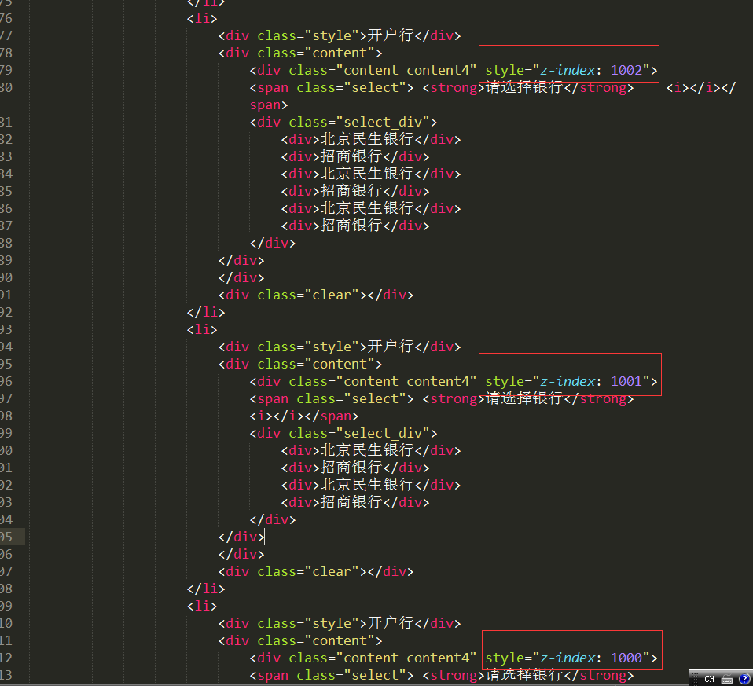

遇到的问题如图示

解决方法给父级元素添加position:relative;z-index 给最上面的z-index值越大，效果如图示。

前端面试总结之JavaScript
JavaScript原型，原型链 ? 有什么特点？
- 原型对象也是普通的对象，是对象一个自带隐式的 proto 属性，原型也有可能有自己的原型，如果一个原型对象的原型不为null的话，我们就称之为原型链。
- 原型链是由一些用来继承和共享属性的对象组成的（有限的）对象链。
- JavaScript的数据对象有那些属性值？
writable：这个属性的值是否可以改。
configurable：这个属性的配置是否可以删除，修改。
enumerable：这个属性是否能在for…in循环中遍历出来或在Object.keys中列举出来。
value：属性值。 - 当我们需要一个属性的时，Javascript引擎会先看当前对象中是否有这个属性， 如果没有的话，就会查找他的Prototype对象是否有这个属性。123456789101112function clone(proto) {function Dummy() { }Dummy.prototype = proto;Dummy.prototype.constructor = Dummy;return new Dummy(); //等价于Object.create(Person);}function object(old) {function F() {};F.prototype = old;return new F();}var newObj = object(oldObject);
eval是做什么的？
它的功能是把对应的字符串解析成JS代码并运行；
应该避免使用eval，不安全，非常耗性能（2次，一次解析成js语句，一次执行）。
null，undefined 的区别？
写一个通用的事件侦听器函数。
// event(事件)工具集，
markyun.Event = {
// 页面加载完成后
readyEvent : function(fn) {
if (fn==null) {
fn=document;
}
var oldonload = window.onload;
if (typeof window.onload != 'function') {
window.onload = fn;
} else {
window.onload = function() {
oldonload();
fn();
};
}
},
// 视能力分别使用dom0||dom2||IE方式 来绑定事件
// 参数： 操作的元素,事件名称 ,事件处理程序
addEvent : function(element, type, handler) {
if (element.addEventListener) {
//事件类型、需要执行的函数、是否捕捉
element.addEventListener(type, handler, false);
} else if (element.attachEvent) {
element.attachEvent('on' + type, function() {
handler.call(element);
});
} else {
element['on' + type] = handler;
}
},
// 移除事件
removeEvent : function(element, type, handler) {
if (element.removeEnentListener) {
element.removeEnentListener(type, handler, false);
} else if (element.datachEvent) {
element.detachEvent('on' + type, handler);
} else {
element['on' + type] = null;
}
},
// 阻止事件 (主要是事件冒泡，因为IE不支持事件捕获)
stopPropagation : function(ev) {
if (ev.stopPropagation) {
ev.stopPropagation();
} else {
ev.cancelBubble = true;
}
},
// 取消事件的默认行为
preventDefault : function(event) {
if (event.preventDefault) {
event.preventDefault();
} else {
event.returnValue = false;
}
},
// 获取事件目标
getTarget : function(event) {
return event.target || event.srcElement;
},
// 获取event对象的引用，取到事件的所有信息，确保随时能使用event；
getEvent : function(e) {
var ev = e || window.event;
if (!ev) {
var c = this.getEvent.caller;
while (c) {
ev = c.arguments[0];
if (ev && Event == ev.constructor) {
break;
}
c = c.caller;
}
}
return ev;
}
};
Node.js的适用场景？
高并发、聊天、实时消息推送
介绍js的基本数据类型。
number,string,boolean,object,undefined
Javascript如何实现继承？
通过原型和构造器
[“1”, “2”, “3”].map(parseInt) 答案是多少？
[1, NaN, NaN] 因为 parseInt 需要两个参数 (val, radix) 但 map 传了 3 个 (element, index, array)
如何创建一个对象? （画出此对象的内存图）
|
|
谈谈This对象的理解。
this是js的一个关键字，随着函数使用场合不同，this的值会发生变化。
但是有一个总原则，那就是this指的是调用函数的那个对象。
this一般情况下：是全局对象Global。 作为方法调用，那么this就是指这个对象
事件是？IE与火狐的事件机制有什么区别？ 如何阻止冒泡？
- 我们在网页中的某个操作（有的操作对应多个事件）。例如：当我们点击一个按钮就会产生一个事件。是可以被 JavaScript 侦测到的行为。
- 事件处理机制：IE是事件冒泡、火狐是 事件捕获；
- ev.stopPropagation();
###什么是闭包（closure），为什么要用它？
执行say667()后,say667()闭包内部变量会存在,而闭包内部函数的内部变量不会存在.使得Javascript的垃圾回收机制GC不会收回say667()所占用的资源，因为say667()的内部函数的执行需要依赖say667()中的变量。这是对闭包作用的非常直白的描述.
闭包就是能够读取其他函数内部变量的函数, 可以把闭包简单理解成”定义在一个函数内部的函数”。
闭包的用途：①可以读取函数内部的变量②可以让变量始终保持在内存中
闭包的优点：
（1）不增加额外的全局变量，
（2）执行过程中所有变量都是在匿名函数内部。
闭包的缺点：
（1）由于闭包会使得函数中的变量都被保存在内存中，内存消耗很大，所以不能滥用闭包，否则会造成网页的性能问题，在IE中可能导致内存泄露。解决方法是，在退出函数之前，将不使用的局部变量全部删除。
（2） 闭包会在父函数外部，改变父函数内部变量的值。不要随便改变父函数内部变量的值。
|
|
var module1 = (function(){
var _count = 0;
var m1 = function(){
//...
};
var m2 = function(){
//...
};
return {
m1 : m1,
m2 : m2
};
})();
|
|
function add(a,b){
alert(a+b);
}
function sub(a,b){
alert(a-b);
}
add.call(sub,3,1);
|
|
$.fn.stringifyArray = function(array) {
return JSON.stringify(array)
}
$.fn.parseArray = function(array) {
return JSON.parse(array)
}
然后调用：
$("").stringifyArray(array)
|
|
function GetRandomNum(Min,Max)
{
var Range = Max - Min;
var Rand = Math.random();
return(Min + Math.round(Rand * Range));
}
var num = GetRandomNum(1,99999);
alert(num);123456### 如何阻止冒泡和默认事件？通过使用 preventDefault() 方法只取消默认的行为。 通过使用 stopPropagation() 方法只阻止一个事件起泡。 ### 请指出“get()”“[]”“eq()”的区别？eq返回的是一个jquery对象，get返回的是一个html 对象数组。举个例子：
绯雨
使用eq来获得第一个p标签的color值：
$(“p”).eq(0).css(“color”) //因为eq(num)返回的是个jq对象，所以可以用jq的方法css
使用get来获得第一个p标签的color值：
$(“p”).get(0).style.color //因为get(num)返回的是个html对象，所以要使用传统的HTML对象方法，jq对象此时就没用了。
当然，你也可以get(num)后把对象转为jq的对象再进行操作：
$($(“p”).get(0)).css(“color”)
```
请说出你可以传递到jQuery方法的四种不同值。
选择器（字符串），HTML（字符串），回调函数，HTML元素，对象，数组，元素数组，jQuery对象等。
对Node的优点和缺点提出了自己的看法：
*（优点）因为Node是基于事件驱动和无阻塞的，所以非常适合处理并发请求，
因此构建在Node上的代理服务器相比其他技术实现（如Ruby）的服务器表现要好得多。
此外，与Node代理服务器交互的客户端代码是由javascript语言编写的，
因此客户端和服务器端都用同一种语言编写，这是非常美妙的事情。
*（缺点）Node是一个相对新的开源项目，所以不太稳定，它总是一直在变，
而且缺少足够多的第三方库支持。看起来，就像是Ruby/Rails当年的样子。
你有哪些性能优化的方法？
（看雅虎14条性能优化原则）。
（1） 减少http请求次数：CSS Sprites, JS、CSS源码压缩、图片大小控制合适；网页Gzip，CDN托管，data缓存 ，图片服务器。
（2） 前端模板 JS+数据，减少由于HTML标签导致的带宽浪费，前端用变量保存AJAX请求结果，每次操作本地变量，不用请求，减少请求次数
（3） 用innerHTML代替DOM操作，减少DOM操作次数，优化javascript性能。
（4） 当需要设置的样式很多时设置className而不是直接操作style。
（5） 少用全局变量、缓存DOM节点查找的结果。减少IO读取操作。
（6） 避免使用CSS Expression（css表达式)又称Dynamic properties(动态属性)。
（7） 图片预加载，将样式表放在顶部，将脚本放在底部 加上时间戳。
（8） 避免在页面的主体布局中使用table，table要等其中的内容完全下载之后才会显示出来，显示比div+css布局慢。
http状态码有那些？分别代表是什么意思？
100-199 用于指定客户端应相应的某些动作。
200-299 用于表示请求成功。
300-399 用于已经移动的文件并且常被包含在定位头信息中指定新的地址信息。
400-499 用于指出客户端的错误。400 1、语义有误，当前请求无法被服务器理解。401 当前请求需要用户验证 403 服务器已经理解请求，但是拒绝执行它。
500-599 用于支持服务器错误。 503 – 服务不可用
一个页面从输入 URL 到页面加载显示完成，这个过程中都发生了什么？（流程说的越详细越好）
查找浏览器缓存
DNS解析、查找该域名对应的IP地址、重定向（301）、发出第二个GET请求
进行HTTP协议会话
客户端发送报头(请求报头)
服务器回馈报头(响应报头)
html文档开始下载
文档树建立，根据标记请求所需指定MIME类型的文件
文件显示
[
浏览器这边做的工作大致分为以下几步：
加载：根据请求的URL进行域名解析，向服务器发起请求，接收文件（HTML、JS、CSS、图象等）。
解析：对加载到的资源（HTML、JS、CSS等）进行语法解析，建议相应的内部数据结构（比如HTML的DOM树，JS的（对象）属性表，CSS的样式规则等等）
}
对前端界面工程师这个职位是怎么样理解的？它的前景会怎么样？
前端是最贴近用户的程序员，比后端、数据库、产品经理、运营、安全都近。
1、实现界面交互
2、提升用户体验
3、有了Node.js，前端可以实现服务端的一些事情
前端是最贴近用户的程序员，前端的能力就是能让产品从 90分进化到 100 分，甚至更好，
参与项目，快速高质量完成实现效果图，精确到1px；
与团队成员，UI设计，产品经理的沟通；
做好的页面结构，页面重构和用户体验；
处理hack，兼容、写出优美的代码格式；
针对服务器的优化、拥抱最新前端技术。
平时如何管理你的项目？
先期团队必须确定好全局样式（globe.css），编码模式(utf-8) 等；
编写习惯必须一致（例如都是采用继承式的写法，单样式都写成一行）；
页面进行标注（例如 页面 模块 开始和结束）；
CSS跟HTML 分文件夹并行存放，命名都得统一（例如style.css）；
JS 分文件夹存放 命名以该JS功能为准的英文翻译。
图片采用整合的 images.png png8 格式文件使用 尽量整合在一起使用方便将来的管理
说说最近最流行的一些东西吧？常去哪些网站？
Node.js、Mongodb、npm、MVVM、MEAN、three.js
移动端（Android IOS）怎么做好用户体验?
清晰的视觉纵线、信息的分组、极致的减法、
利用选择代替输入、标签及文字的排布方式、
依靠明文确认密码、合理的键盘利用、
前端页面有哪三层构成，分别是什么？作用是什么？
最准确的网页设计思路是把网页分成三个层次，即：结构层、表示层、行为层。
网页的结构层（structural layer）由 HTML 或 XHTML 之类的标记语言负责创建。标签，也就是那些出现在尖括号里的单词，对网页内容的语义含义做出了描述，但这些标签不包含任何关于如何显示有关内容的信息。例如，P 标签表达了这样一种语义：“这是一个文本段。”
网页的表示层（presentation layer） 由 CSS 负责创建。 CSS 对“如何显示有关内容”的问题做出了回答。
网页的行为层（behavior layer）负责回答“内容应该如何对事件做出反应”这一问题。这是 Javascript 语言和 DOM 主宰的领域。
页面重构怎么操作？
编写 CSS、让页面结构更合理化，提升用户体验，实现良好的页面效果和提升性能。
网站为什么要进行重构（网站重构的好处）
a、使页面加载得更快速；
b、降低带宽带来的费用：节约成本；
c、让你在修改设计时更有效率而代价更低；
d、帮助你的整个站点保持视觉的一致性；
e、更利于搜索引擎的检索（符合SEO的规范）；
f、令站点更容易被各种浏览器和用户访问（包括手机、PDA和残障人士使用的文字浏览器）；
g、兼容不容忽视的Mozilla系浏览器（Firefox份额）；
h、提高你的职场竞争实力(事实上也就是降低失业的风险)。
什么叫优雅降级和渐进增强？
优雅降级：Web站点在所有新式浏览器中都能正常工作，如果用户使用的是老式浏览器，则代码会检查以确认它们是否能正常工作。由于IE独特的盒模型布局问题，针对不同版本的IE的hack实践过优雅降级了,为那些无法支持功能的浏览器增加候选方案，使之在旧式浏览器上以某种形式降级体验却不至于完全失效.
渐进增强：从被所有浏览器支持的基本功能开始，逐步地添加那些只有新式浏览器才支持的功能,向页面增加无害于基础浏览器的额外样式和功能的。当浏览器支持时，它们会自动地呈现出来并发挥作用。
WEB应用从服务器主动推送Data到客户端有那些方式？
html5 websoket
WebSocket通过Flash
XHR长时间连接
XHR Multipart Streaming
不可见的Iframe
<script>标签的长时间连接(可跨域)
html,xhtml,xml的区别介绍
html(超文本标记语言)——xhtml(可扩展性超文本标记语言)——xml（可扩展性标记语言）;
html：
1.对大小写不敏感；
2.标签不必成对出现；
3.
;
xhtml：
1.对大小写敏感，必须是小写的；
2.标签必须成对出现，有开始标签就必须有结束标签；
3.属性值必须在引号之内；
4.不支持属性最小化：
eg：正确：
错误：
5.name属性不赞成使用，以后会被淘汰；
6.空元素也要结束标签：如：
,
(水平分割线)
xml：
html最终会发展到xml，xhtml是html想xml发展的一个过渡，xhtml的特性也适合xml；
前端面试总结之CSS
介绍一下CSS的盒子模型？
（1）有两种， IE 盒子模型、标准 W3C 盒子模型；IE的content部分包含了 border 和 pading;
（2）盒模型： 内容(content)、填充(padding)、边界(margin)、 边框(border).
CSS 选择符有哪些？哪些属性可以继承？优先级算法如何计算？ CSS3新增伪类有那些？
1.id选择器（ # myid）
2.类选择器（.myclassname）
3.标签选择器（div, h1, p）
4.相邻选择器（h1 + p）
5.子选择器（ul < li）
6.后代选择器（li a）
7.通配符选择器（ * ）
8.属性选择器（a[rel = “external”]）
9.伪类选择器（a: hover, li: nth - child）
- 可继承的样式： font-size font-family color, UL LI DL DD DT;
- 不可继承的样式：border padding margin width height ;
- 优先级就近原则，同权重情况下样式定义最近者为准;
- 载入样式以最后载入的定位为准;
优先级为:
- !important > id > class > tag
- important 比 内联优先级高
CSS3新增伪类举例：1234567p:first-of-type 选择属于其父元素的首个 <p> 元素的每个 <p> 元素。p:last-of-type 选择属于其父元素的最后 <p> 元素的每个 <p> 元素。p:only-of-type 选择属于其父元素唯一的 <p> 元素的每个 <p> 元素。p:only-child 选择属于其父元素的唯一子元素的每个 <p> 元素。p:nth-child(2) 选择属于其父元素的第二个子元素的每个 <p> 元素。:enabled :disabled 控制表单控件的禁用状态。:checked 单选框或复选框被选中。
如何居中div？如何居中一个浮动元素？
给div设置一个宽度，然后添加margin:0 auto属性div{
width:200px;
margin:0 auto;
}
居中一个浮动元素
确定容器的宽高 宽500 高 300 的层
设置层的外边距
.div {
Width:500px ; height:300px;//高度可以不设
Margin: -150px 0 0 -250px;
position:relative;相对定位
background-color:pink;//方便看效果
left:50%;
top:50%;
}
列出display的值，说明他们的作用。position的值， relative和absolute定位原点是？
- block 象块类型元素一样显示。
none 缺省值。象行内元素类型一样显示。
inline-block 象行内元素一样显示，但其内容象块类型元素一样显示。
list-item 象块类型元素一样显示，并添加样式列表标记。 - absolute
生成绝对定位的元素，相对于 static 定位以外的第一个父元素进行定位。 fixed （老IE不支持）
生成绝对定位的元素，相对于浏览器窗口进行定位。
*relative
生成相对定位的元素，相对于其正常位置进行定位。
- static 默认值。没有定位，元素出现在正常的流中
*（忽略 top, bottom, left, right z-index 声明）。 - inherit 规定从父元素继承 position 属性的值。
CSS3有哪些新特性？
CSS3实现圆角（border-radius:8px），阴影（box-shadow:10px），
对文字加特效（text-shadow、），线性渐变（gradient），旋转（transform）
transform:rotate(9deg) scale(0.85,0.90) translate(0px,-30px) skew(-9deg,0deg);//旋转,缩放,定位,倾斜
增加了更多的CSS选择器 多背景 rgba
你怎么来实现页面设计图，你认为前端应该如何高质量完成工作? 一个满屏 品 字布局 如何设计?
首先划分成头部、body、脚部；。。。。。
实现效果图是最基本的工作，精确到2px；
与设计师，产品经理的沟通和项目的参与
做好的页面结构，页面重构和用户体验
处理hack，兼容、写出优美的代码格式
针对服务器的优化、拥抱 HTML5。
常使用的库有哪些？常用的前端开发工具？开发过什么应用或组件？
* 使用率较高的框架有jQuery、YUI、Prototype、Dojo、Ext.js、Mootools等。尤其是jQuery，超过91%。
轻量级框架有Modernizr、underscore.js、backbone.js、Raphael.js等。
（理解这些框架的功能、性能、设计原理）
* Sublime Text 、Eclipse、Notepad、Firebug、HttpWatch、Yslow。
* 城市选择插件，汽车型号选择插件、幻灯片插件。弹出层。（写过开源程序，加载器，js引擎更好）
经常遇到的CSS的兼容性有哪些？原因，解决方法是什么？
为什么要初始化CSS样式。
- 因为浏览器的兼容问题，不同浏览器对有些标签的默认值是不同的，如果没对CSS初始化往往会出现浏览器之间的页面显示差异。
- 当然，初始化样式会对SEO有一定的影响，但鱼和熊掌不可兼得，但力求影响最小的情况下初始化。
最简单的初始化方法就是： {padding: 0; margin: 0;} （不建议）
淘宝的样式初始化：
body, h1, h2, h3, h4, h5, h6, hr, p, blockquote, dl, dt, dd, ul, ol, li, pre, form, fieldset, legend, button, input, textarea, th, td {
margin:0; padding:0; }
body, button, input, select, textarea { font:12px/1.5tahoma, arial, \5b8b\4f53; }
h1, h2, h3, h4, h5, h6{ font-size:100%; }
address, cite, dfn, em, var { font-style:normal; }
code, kbd, pre, samp { font-family:couriernew, courier, monospace; }
small{ font-size:12px; }ul, ol { list-style:none; }
a { text-decoration:none; }
a:hover { text-decoration:underline; }
sup { vertical-align:text-top; }
sub{ vertical-align:text-bottom; }
legend { color:#000; }
fieldset, img { border:0; }
button, input, select, textarea { font-size:100%; }
table { border-collapse:collapse; border-spacing:0; }
absolute的containing block计算方式跟正常流有什么不同？
position跟display、margin collapse、overflow、float这些特性相互叠加后会怎么样？
对BFC规范的理解？
（W3C CSS 2.1 规范中的一个概念,它决定了元素如何对其内容进行定位,以及与其他元素的关 系和相互作用。）
css定义的权重
以下是权重的规则：标签的权重为1，class的权重为10，id的权重为100，以下例子是演示各种定义的权重值：
/权重为1/div{}/权重为10/.class1{}/权重为100/#id1{}/权重为100+1=101/#id1 div{}/权重为10+1=11/.class1 div{}/权重为10+10+1=21/.class1 .class2 div{}
如果权重相同，则最后定义的样式会起作用，但是应该避免这种情况出现
解释下浮动和它的工作原理？清除浮动的技巧
浮动元素脱离文档流，不占据空间。浮动元素碰到包含它的边框或者浮动元素的边框停留。
技巧:
1.使用空标签清除浮动。
这种方法是在所有浮动标签后面添加一个空标签 定义css clear:both. 弊端就是增加了无意义标签。
2.使用overflow。
给包含浮动元素的父标签添加css属性 overflow:auto; zoom:1; zoom:1用于兼容IE6。
3.使用after伪对象清除浮动。
该方法只适用于非IE浏览器。具体写法可参照以下示例。使用中需注意以下几点。一、该方法中必须为需要清除浮动元素的伪对象中设置 height:0，否则该元素会比实际高出若干像素；
4.在html页面添加：<div class=’clear’></div>
用过媒体查询，针对移动端的布局吗？
用过 @media screen and (min-width:480px){ }
使用 CSS 预处理器吗？喜欢那个？
三款 CSS 预处理器框架，分别是 Sass、Less CSS、Stylus。 喜欢哪个？Sass
什么是CSS预处理器？
CSS 预处理器是一种语言用来为 CSS 增加一些编程的的特性，无需考虑浏览器的兼容性问题，例如你可以在 CSS 中使用变量、简单的程序逻辑、函数等等在编程语言中的一些基本技巧，可以让你的 CSS 更见简洁，适应性更强，代码更直观等诸多好处。
title和alt区别？
alt属性的功能是不能显示图像信息时候的替换文字(即在图片显示的位置上显示文字，说明这个图片的要显示的内容)。Alt属性值的长度必须少于100个英文字符。
title属性可以用在除了base，basefont，head，html，meta，param，script和title之外的所有标签。
title属性的功能是提示。额外的说明信息和非本质的信息请使用title属性。title属性值可以比alt属性值设置的更长。
title属性有一个很好的用途，即为链接添加描述性文字，特别是当连接本身并不是十分清楚的表达了链接的目的。这样就使得访问者知道那些链接将会带他们到什么地方，他们就不会加载一个可能完全不感兴趣的页面。另外一个潜在的应用就是为图像提供额外的说明信息，比如日期或者其他非本质的信息。
解释css sprites,如何使用。
CSS Sprite 又叫CSS精灵，是目前大型网站中经常运用的图片处理方式。它的原理很简单，将网站上零散的小图片（或图标）整合在一张大图上，再用CSS中“background-image”属性来定位图片的X/Y轴位置，从而减轻服务器对图片的请求数量，提高网页加载速度。因为对于当前大多数网速而言，不高于200KB的单张图片所需载入时间基本是差不多的，如果页面上有20张小图片或图标，那么服务器会载入20次。但使用CSS Sprite将图片整合成一张大图后，服务器只需要载入一次就够了，很大程度上优化了图片加载速度，这在门户型网站尤为明显。
CSS Sprites优点
1.利用CSS Sprites能很好地减少了网页的http请求，从而大大的提高了页面的性能，这也是CSS Sprites最大的优点，也是其被广泛传播和应用的主要原因；
2.CSS Sprites能减少图片的字节，曾经比较过多次3张图片合并成1张图片的字节总是小于这3张图片的字节总和。解决了网页设计师在图片命名上的困扰，只需对一张集合的图片上命名就可以了，不需要对每一个小元素进行命名，从而提高了网页的制作效率。
3.更换风格方便，只需要在一张或少张图片上修改图片的颜色或样式，整个网页的风格就可以改变。维护起来更加方便。
CSS Sprites缺点
1.在图片合并的时候，你要把多张图片有序的合理的合并成一张图片，还要留好足够的空间，防止板块内不会出现不必要的背景；这些还好，最痛苦的是在宽屏，高分辨率的屏幕下的自适应页面，你的图片如果不够宽，很容易出现背景断裂；
2.CSS Sprites在开发的时候比较麻烦，你要通过photoshop或其他工具测量计算每一个背景单元的精确位置，这是针线活，没什么难度，但是很繁琐；幸好腾讯的鬼哥用RIA开发了一个CSS Sprites 样式生成工具，虽然还有一些使用上的不灵活，但是已经比photoshop测量来的方便多了，而且样式直接生成，复制，拷贝就OK！
3.CSS Sprites在维护的时候比较麻烦，如果页面背景有少许改动，一般就要改这张合并的图片，无需改的地方最好不要动，这样避免改动更多的css，如果在原来的地方放不下，又只能（最好）往下加图片，这样图片的字节就增加了，还要改动css。
在书写高效css文件时会有哪些问题需要考虑
1.css 命名 、书写规范；（好的代码看上去就很整齐 很有条理性这样方便日后的维护和管理）
2.css优先级； 选择器权重：内联样式：1000，id选择器：1000， class选择器：10，标签选择器：1 注意权重的问题。
3.少用滤镜，少用hack，少用position：absolute；。
4.多用继承属性。
5.使用简写样式：例如margin: 10px; 浏览器会解释为上下左右各有10px的外补丁。margin： 0 10px 浏览器解析为 左右有10px的外补丁。
6.不要在ID选择器和class选择器前 使用标签名 例如：div.box { color: #f00; }; 直接 可以 用类名， .box { color:#f00;} 这样浏览器找到这个class后 就不用再匹配是否存在div标签.从而提高了渲染效率。当然同一级的 有不同的样式可以这样写，但是不建议这样。
7.css的层级关系不要太深 用class直接代替多余的层级元素。
前端面试总结之HTML
Doctype作用? 严格模式与混杂模式如何区分？它们有何意义?
1.<!DOCTYPE> 声明位于文档中的最前面，处于 标签之前。告知浏览器的解析器，
用什么文档类型 规范来解析这个文档。
2.严格模式的排版和 JS 运作模式是 以该浏览器支持的最高标准运行。
3.在混杂模式中，页面以宽松的向后兼容的方式显示。模拟老式浏览器的行为以防止站点无法工作。
4.DOCTYPE不存在或格式不正确会导致文档以混杂模式呈现。
行内元素有哪些？块级元素有哪些？ 空(void)元素有那些？
1.CSS规范规定，每个元素都有display属性，确定该元素的类型，每个元素都有默认的display值，
比如div默认display属性值为“block”，成为“块级”元素；
span默认display属性值为“inline”，是“行内”元素。
2.行内元素有：a b span img input select strong（强调的语气）
块级元素有：div ul ol li dl dt dd h1 h2 h3 h4…p
3.知名的空元素：
鲜为人知的是：
移动端rem初始化
|
|
js获取索引的不同
|
|
email中html页面需要注意的几点
|
|
IE6常见bug总结
1、IE6怪异解析之padding与border算入宽高
原因：未加文档声明造成非盒模型解析
解决方法：加入文档声明<!doctype html>
2、IE6在块元素、左右浮动、设定marin时造成margin双倍（双边距）
解决方法：display:inline
3、以下三种其实是同一种bug，其实也不算是个bug，举个例子：父标签高度20，子标签11，垂直居中，20-11=9，9要分给文字的上面与下面，怎么分？IE6就会与其它的不同，所以，尽量避免。
1）字体大小为奇数之边框高度少1px
解决方法：字体大小设置为偶数或line-height为偶数
2）line-height，文本垂直居中差1px
解决方法：padding-top代替line-height居中，或line-height加1或减1
3）与父标签的宽度的奇偶不同的居中造成1px的偏离
解决方法：如果父标签是奇数宽度，则子标签也用奇数宽度;如果是父标签偶数宽度，则子标签也用偶数宽度
4、内部盒模型超出父级时，父级被撑大
解决方法：父标签使用overflow:hidden
5、line-height默认行高bug
解决方法：line-height设值
6、行标签之间会有一小段空白
解决方法：float或结构并排(可读性差，不建议)
7、标签高度无法小于19px
解决方法：overflow: hidden;
8、左浮元素margin-bottom失效
解决方法：显示设置高度 or 父标签设置_padding-bottom代替子标签的margin-bottom or 再放个标签让父标签浮动，子标签
margin- bottom，即(margin-bottom与float不同时作用于一个标签)
9、img于块元素中，底边多出空白
解决方法：父级设置overflow: hidden; 或 img { display: block; } 或 _margin: -5px;
10、li之间会有间距
解决方法：float: left;
11、块元素中有文字及右浮动的行元素，行元素换行
解决方法：将行元素置于块元素内的文字前
12、position下的left，bottom错位
解决方法：为父级(relative层)设置宽高或添加*zoom:1
13、子级中有设置position，则父级overflow失效
解决方法：为父级设置position:relative
以下是补充：上面要先看
1、终极方法：条件注释
缺点是在IE浏览器下可能会增加额外的HTTP请求数。
2、CSS选择器区分
IE6不支持子选择器；先针对IE6使用常规申明CSS选择器，然后再用子选择器针对IE7+及其他浏览器。
复制代码
代码如下:
/ IE6 专用 /
.content {color:red;}
/ 其他浏览器 /
div>p .content {color:blue;} –>
3、PNG半透明图片的问题
虽然可以通过JS等方式解决，但依然存在载入速度等问题，所以，这个在设计上能避免还是尽量避免为好。以达到网站最大优化。
4、IE6下的圆角
IE6不支持CSS3的圆角属性，性价比最高的解决方法就是用图片圆角来替代，或者放弃IE6的圆角。
5、IE6背景闪烁
如果你给链接、按钮用CSS sprites作为背景，你可能会发现在IE6下会有背景图闪烁的现象。造成这个的原因是由于IE6没有将背景图缓存，每次触发hover的时候都会重新加载，可以用JavaScript设置IE6缓存这些图片：
复制代码
代码如下:
document.execCommand(“BackgroundImageCache”,false,true);
6、最小高度
IE6 不支持min-height属性，但它却认为height就是最小高度。解决方法：使用ie6不支持但其余浏览器支持的属性!important。
复制代码
代码如下:
#container {min-height:200px; height:auto !important; height:200px;}
7、最大高度
复制代码
代码如下:
//直接使用ID来改变元素的最大高度
var container = document.getElementById(‘container’);
container.style.height = (container.scrollHeight > 199) ? “200px” : “auto”;
//写成函数来运行
function setMaxHeight(elementId, height){
var container = document.getElementById(elementId);
container.style.height = (container.scrollHeight > (height - 1)) ? height + “px” : “auto”;
}
//函数示例
setMaxHeight(‘container1’, 200);
setMaxHeight(‘container2’, 500);
8、100% 高度
在IE6下，如果要给元素定义100%高度，必须要明确定义它的父级元素的高度，如果你需要给元素定义满屏的高度，就得先给html和body定义height:100%;。
9、最小宽度
同max-height和max-width一样，IE6也不支持min-width。
复制代码
代码如下:
//直接使用ID来改变元素的最小宽度
var container = document.getElementById(‘container’);
container.style.width = (container.clientWidth < width) ? “500px” : “auto”;
//写成函数来运行
function setMinWidth(elementId, width){
var container = document.getElementById(elementId);
container.style.width = (container.clientWidth < width) ? width + “px” : “auto”;
}
//函数示例
setMinWidth(‘container1’, 200);
setMinWidth(‘container2’, 500);
10、最大宽度
复制代码
代码如下:
//直接使用ID来改变元素的最大宽度
var container = document.getElementById(elementId);
container.style.width = (container.clientWidth > (width - 1)) ? width + “px” : “auto”;
//写成函数来运行
function setMaxWidth(elementId, width){
var container = document.getElementById(elementId);
container.style.width = (container.clientWidth > (width - 1)) ? width + “px” : “auto”;
}
//函数示例
setMaxWidth(‘container1’, 200);
setMaxWidth(‘container2’, 500);
11、双边距Bug
当元素浮动时，IE6会错误的把浮动方向的margin值双倍计算。个人觉得较好解决方法是避免float和margin同时使用。
12、清除浮动
如果你想用div(或其他容器)包裹一个浮动的元素，你会发现必须给div(容器)定义明确的height、width、overflow之中一个属性（除了auto值）才能将浮动元素严实地包裹。
复制代码
代码如下:
#container {border:1px solid #333; overflow:auto; height:100%;}
#floated1 {float:left; height:300px; width:200px; background:#00F;}
#floated2 {float:right; height:400px; width:200px; background:#F0F;}
更多：http://www.twinsenliang.net/skill/20090413.html
13、浮动层错位
当内容超出外包容器定义的宽度时，在IE6中容器会忽视定义的width值，宽度会错误地随内容宽度增长而增长。
浮动层错位问题在IE6下没有真正让人满意的解决方法，虽然可以使用overflow:hidden;或overflow:scroll;来修正， 但hidden容易导致其他一些问题，scroll会破坏设计；JavaScript也没法很好地解决这个问题。所以建议是一定要在布局上避免这个问题发 生，使用一个固定的布局或者控制好内容的宽度（给内层加width）。
14、躲猫猫bug
在IE6和IE7下，躲猫猫bug是一个非常恼人的问题。一个撑破了容器的浮动元素，如果在他之后有不浮动的内容，并且有一些定义了:hover的链接，当鼠标移到那些链接上时，在IE6下就会触发躲猫猫。
解决方法很简单：
1.在（那个未浮动的）内容之后添加一个
2.触发包含了这些链接的容器的hasLayout，一个简单的方法就是给其定义height:1%;
15、绝对定位元素的1像素间距bug
IE6下的这个错误是由于进位处理误差造成（IE7已修复），当绝对定位元素的父元素高或宽为奇数时，bottom和right会产生错误。唯一的解决办法就是给父元素定义明确的高宽值，但对于液态布局没有完美的解决方法。
16、3像素间距bug
在IE6中，当文本(或无浮动元素)跟在一个浮动的元素之后，文本和这个浮动元素之间会多出3像素的间隔。
给浮动层添加 display:inline 和 -3px 负值margin
给中间的内容层定义 margin-right 以纠正-3px
17、IE下z-index的bug
在IE浏览器中，定位元素的z-index层级是相对于各自的父级容器，所以会导致z-index出现错误的表现。解决方法是给其父级元素定义z-index，有些情况下还需要定义position:relative。
18、Overflow Bug
在IE6/7中，overflow无法正确的隐藏有相对定位position:relative;的子元素。解决方法就是给外包容器.wrap加上position:relative;。
19、横向列表宽度bug
如果你使用float:left;把
20、列表阶梯bug
列表阶梯bug通常会在给
21、垂直列表间隙bug
当我们使用
解决方法：把flaot并且清除float来解决这个问题；另外一个办法就是触发的hasLayout（如定 义高宽、使用zoom:1;）；也可以给
22、IE6中的:hover
在IE6中，除了(需要有href属性)才能触发:hover行为，这妨碍了我们实现许多鼠标触碰效果，但还是有一些法子是可以解决它的。最好是不要用:hover来实现重要的功能，仅仅只用它来强化效果。
23、IE6调整窗口大小的 Bug
当把body居中放置，改变IE浏览器大小的时候，任何在body里面的相对定位元素都会固定不动了。解决办法：给body定义position:relative;就行了。
24、文本重复Bug
在IE6中，一些隐藏的元素（如注释、display:none;的元素）被包含在一个浮动元素里，就有可能引发文本重复bug。解决办法：给浮动元素添加display:inline;。
tab栏写法
|
|
去除html标签，获取文本
|
|